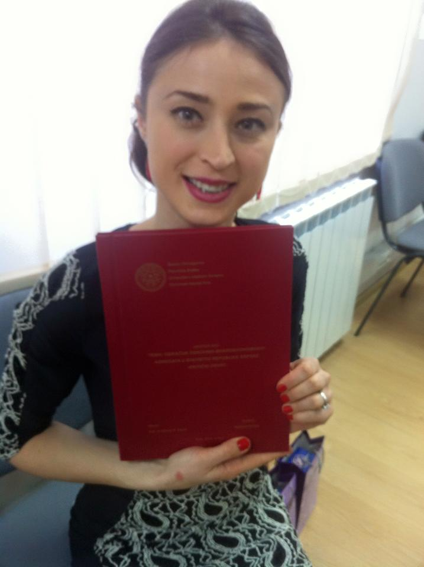

Master of Economics (2012-2014)
University of East Sarajevo
Faculty of Economics Pale
Department of Quantitative Economics and Statistical analysis
Undergraduate Academic Studies (2007-2011)
University of East Sarajevo
Faculty of Economics Pale
Department of Finance and banking
Second-Cycle Academic Studies
First-Cycle Academic Studies
Lover of life who knows how to enjoy in it. I like a good joke, hanging out and working. Based on it, I am productive, no matter the job I do. People, who have more experience than I do, have told me that I am able to easily pick up the programming tricks. With the help of that, work and desire to make my life happier, I believe that one day I am going to become a serious software QA engineer and Front-End Developer.